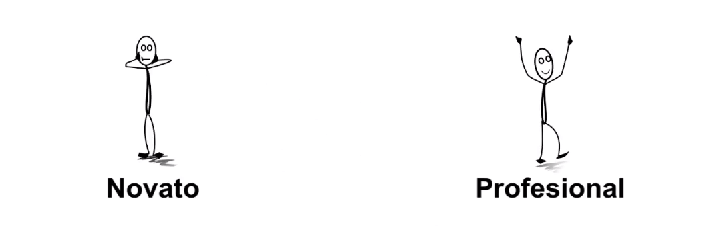
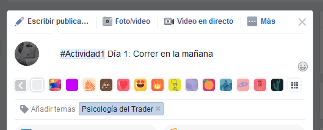
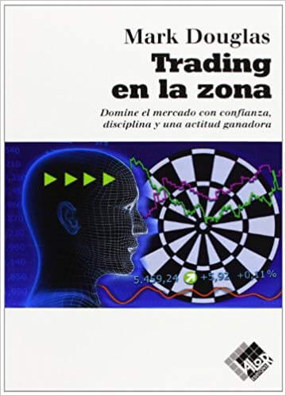
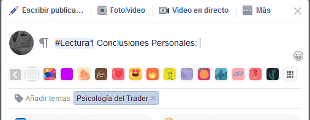

Mentalidad del Trader Exitoso
Para empezar con este curso de trading es necesario que sepas cual debe ser la mentalidad que debemos tener en todo momento.
Es importante estar preparado pues como ya te lo he explicado con anterioridad este no será un camino sencillo. El trading no es apto para aquellos que son débiles mentalmente y tienden a sufrir demasiado cuando todo se les va en contra.
Realmente me impresionas Trader, has decidido enfrentarte a uno de los procesos de aprendizaje más complicados que pueda existir, romperás paradigmas y romperás tus propias creencias.
Empezaremos modificando una idea que tenemos en nuestras cabezas, algunos creen que existe un santo grial, un indicador, plantilla o bot mágico que les permitirá ganar miles de dólares. Otros están convencidos que no existe ningún santo grial y que todo esto del trading simplemente es estafa.
Déjame decirte amigo y amiga Trader que el santo grial eres tú. Esta dentro de ti, solo tú tienes el poder de encontrarlo.
El problema es que no lo sabes, tampoco sabes exactamente qué es lo que buscas, y creo que tampoco sabes que es lo que esperas. Entonces, ¿Cómo piensas encontrarlo?
Para entender mejor que es lo que queremos alcanzar dividamos nuestro proceso de aprendizaje en dos partes.
El trader novato y el trader profesional.

Mentalidad de un Trader Novato
Mientras menos disciplina tengas más tiempo pasaras en esta etapa. El trader novato tiene entre sus cualidades el deseo de conseguir grandes cantidades de dinero de manera rápida y sencilla.
Ve al trading como la solución a todos sus problemas. El trader novato no asume responsabilidad, culpa a todos, al bróker, al horario, al internet, menos a sí mismo y a su falta de conocimiento y experiencia.
Un trader indisciplinado siempre busca vengarse del mercado, no sabe controlarse y se enoja con las pérdidas. No se detiene ni cuando pierde ni cuando ha ganado y llegado a su objetivo.
Este trader inexperto se deja engañar fácilmente, confía de cualquiera y de cualquier imagen con resultados llamativos que vea. Se interesa más por los montos de las operaciones que por los fundamentos de los análisis.
A continuación te presento las cualidades más comunes que presentamos cuando somos nuevos en el trading:
- Millonario en 3 meses
- No sabe usar la cuenta DEMO
- No tiene disciplina
- Busca el camino fácilEl indicador Sagrado:El Ladrón de estrategias:El PlantilleroSeñal SUPER VIP TRADER PRO versión diamante.El Reclutador
Ahora veamos las características que tiene un trader profesional, y con profesional no me refiero a alguien que haya estudiado en una universidad, con profesional me refiero a alguien que sabe hacer su trabajo, que opera en modo francotirador y dispara a su presa sin miedo.
Para hacerlo más sencillo voy a agrupar todo en 2 cualidades.
Confío que será fácil para ti, tú tienes el poder de hacerlo, después de todo por eso estas acá, por decisión propia, confianza y control.
Mentalidad de un Trader Profesional:
- Sabe lo que hace. El trader profesional conoce su trabajo, ha operado tantas veces un mismo patrón de velas que sabe en qué momentos es engañoso y en cuales puede confiar completamente. Este trader confía en sus análisis, sabe que la experiencia que tiene es la que le ha permitido llegar hasta donde se encuentra y reconoce que para mantenerse en donde esta debe seguir haciendo los mismos análisis que ya conoce. Es responsable de mejorar constantemente y seguir con mucha disciplina su gestión de Riesgo.
Al saber lo que hace el Trader profesional tiene la paciencia de esperar los momentos precisos cuyos movimientos pueda reconocer y le permitan realizar una operación limpia.
La paciencia del buen trader paga.
- Se conoce. El trader profesional se conoce perfectamente, hace auto análisis constantemente para saber cómo se encuentra, reconoce que le hace falta mejorar, cuáles son sus debilidades y fortalezas. El trader profesional se toma el tiempo de aprender de sus errores y de corregirlos.
Conoce sus límites y sabe a donde podrían llevarlo sus malos hábitos. Trabaja diariamente con la disciplina necesaria para mantenerse constante, apegado a las reglas de trabajo que ha construido para sí mismo.
Cómo puedes ver, el buen trader no necesita aprobación de nadie, él se conoce y sabe en qué tipos de mercado y horarios le va mejor. No opera todos los días puesto que sabe que no es una obligación, asume sus pérdidas y no le afectan puesto que están dentro del margen que tiene permitido perder. Confía en sí mismo y en su experiencia.
El buen trader no se enoja al perder una operación, analiza su perdida, aprende y corrige y en una próxima ocasión sabe qué decisión debe tomar.
Si quieres ser un trader rentable debes comportarte como un profesional.
Primero debes tener experiencia, para tener experiencia debes practicar. Para poder practicar con bases sólidas debes estudiar.
Es todo un proceso el que vas a seguir, necesitas constancia y determinación. Esto va a llevarte tiempo, y no vas a ver frutos rápidamente, ten paciencia.
El Trading es un trabajo muy estresante y exigente, si haces un buen trabajo analizando bien y comportándote como un profesional esperando el momento adecuado recibirás una paga.
Pero si haces todo con desesperación tendrás análisis de mala calidad y entonces no te van a pagar, es más, te van a descontar dinero.
Aprende a hacer un buen análisis, has un buen trabajo y busca siempre la calidad.
Cómo usar el Demo:
Identifiquemos las dos formas en que podemos usar la cuenta DEMO:
- Explorar: Aquí usaras tu cuenta demo para aprender del mercado, tu intensión en esta etapa no es saber cuánto dinero puedes hacer o ver tu historial verde y todo bonito.
Tu trabajo acá es aprender de tus errores, agarrar experiencia de cada operación que hagas. No importa la cantidad de dinero, no le prestes atención a eso, todas tus operaciones pueden ser de 1$.
No le des importancia al dinero demo en esta etapa, no cometas el error de aquellos que le temen al demo. Aprende a usarlo.
Aquí no hay un límite de operaciones al día puesto que tu misión es aprender del mercado, aquí no importa cuántas operaciones ganes o pierdas, importa la experiencia que estas adquiriendo con cada operación que realices.
Cada resultado debes analizarlo, corroborar tu análisis y corregirlo en caso de que tu operativa sea perdedora.
- Evaluar: En este proceso debes bajar tu cuenta demo a 10$. En la etapa anterior ya exploramos y aprendimos, ahora en esta nueva etapa debemos de poner evaluar toda nuestra experiencia.
Opera sin ningún temor, si pierdes la operación debes aprovechar la oportunidad y en lugar de enojarte porque no funcionó algo que siempre te funciona, aprende del error y así aumentaras las probabilidades de éxito cada vez que operes esas situaciones.
Aquí operas con mucha paciencia, buscas las mejores operaciones y solo entras en situaciones que tengas experiencia.
Tu objetivo es evaluar tu operativa, conocer tu porcentaje de acierto y así finalmente crear una gestión de riesgo acorde a tus avances y poder dar el salto a real.
Actividades de disciplina:
La disciplina desde mi punto de vista es algo de lo más complicado de poder alcanzar cómo traders.
Tenemos que romper las cadenas de la mediocridad que nos atan a querer las cosas rápido y sin esfuerzo, debemos ofrecer nuestro mejor trabajo.
La disciplina es difícil de mantener, tenemos que trabajar mucho y los resultados no son notables en los primeros días, incluso meses. Pero debemos ser constantes y tener presente que es muy fácil destruir lo que nos ha llevado tanto tiempo crear.
Para ayudar a mejorar nuestra disciplina haremos el reto de los 30 días.
Actividad #1 Disciplina
Este Actividad/Reto consiste en que elijas una tarea que te sea muy trabajosa de realizar, por ejemplo: Levantarte más temprano, hacer deporte, dejar de tomar gaseosas, dejar de fumar, leer un libro, etc.
Una vez tengas elegido que vas a hacer debes empezar inmediatamente, no es algo que lo empiezas “la otra semana”, es algo que debes empezar a hacer desde Ya.
Para llevar un registro y a modo de motivación puedes compartir tu actividad de disciplina en el grupo del salón virtual.
Compártelo cómo #actividad1 y la descripción de tu actividad, puedes añadir fotos o algo que te motive a seguir compartiendo tus avances, ¡nosotros te apoyaremos!
Asegúrate de colocar todas tus dudas y actividades de esta clase bajo la etiqueta Psicología del Trader.

Recomendación de Lectura:

Durante este mes (Julio 2019) leeremos el libro de Trading en la Zona, es casi cómo la biblia del trader, en algún momento de su proceso de aprendizaje el trader lo leerá.
Esta comprobado (por mi mismo) que tenemos un mal habito de lectura. Para mejorar este hábito vamos a estar trabajando actividades de lectura en el salón virtual.
Te pediré que compartas en el salón tus conclusiones tras haber terminado un capitulo de lectura.
Compártelo bajo el #Lectura1, todos tenemos diferentes puntos de vista y será interesante saber cómo abordamos los diferentes temas que nos presenta el autor Mark Douglas.

Te comparto algunas preguntas que puedes hacerte para saber que tanto te conoces hasta el momento.
- ¿Por qué quieres ser un trader rentable? Define tu motivación.
- ¿Cuál es tu objetivo en el trading?
- ¿Cuánto tiempo, dinero y esfuerzo estas dispuesto a dar a cambio de alcanzar tu objetivo? Cuantificalo.
- ¿Cómo es tu estilo de vida actualmente y cómo es el que quieres tener cuando seas rentable?
- ¿Por qué quieres obtener resultados rápido? ¿Qué puedes hacer para evitarlo?
- ¿Le tienes miedo a perder una operación? ¿Trabajas con dinero que no puedes permitirte perder?
- Si no logras tus objetivos en el trading ¿A quiénes estarías decepcionando?
- Si ya tienes un poco de experiencia en el trading menciona cuáles son tus errores más comunes.
Gracias por acompañarme en esta clase, ¡te veo pronto Trader!